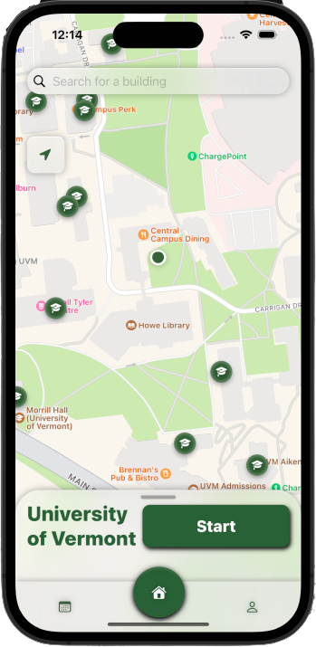

TAKE A TOUR
Map
The main map page welcomes you onto the app, where it shows the map and your current location. There's a search bar up top, where you type in a location, i.e. "Billings Library," and it will track your travel to help you get there. There is also an ETA for your route, which helps you keep on pace. There are also two modes, bike and walk, which help you plan your journey for both modes of travel.
